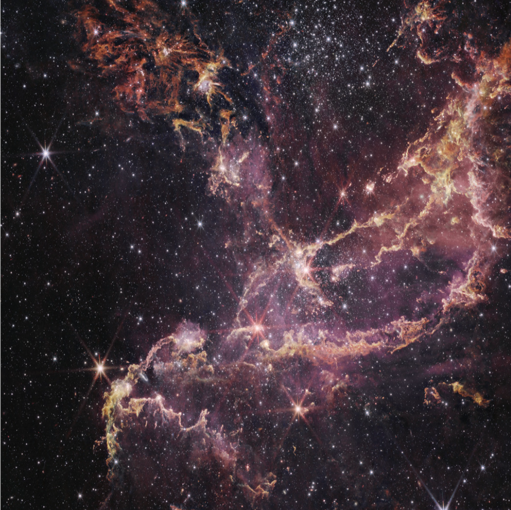
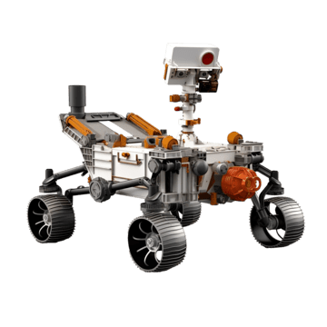

Astronomy
is the study of planets, stars, galaxies, and the entirety of
the universe! We start from the beginning of time, when the Big
Bang occurred approximately 13.8 billion years ago, to the very
spot that NASA’s telescopes may have been looking at mere
seconds ago. Astronomy itself is an observational science.
Astronomy, though studied through gamma rays, radiation, and other
remnants of celestial bodies, has a wide variety of subdivisions
beneath it. This includes sectors like astrometry, the mapping
of celestial bodies; astrobiology, and the exploration for life
that may exist in space; astrophysics, how the laws of physics
can be applied to study distant objects; and astrogeology, what
the physical materials in space are composed of.
There are
two types
of astronomy: theoretical and observational. In observational
astronomy, data is taken straight from space. In theoretical
astronomy, machine learning models and other algorithms are
created to predict the outcome of parts of astronomy.

Specifically, astrography is mapping or photography of celestial bodies and their orbits. It includes their coordinates and any methods used to map them, which has changed many times over the years. Also referred to as uranography, it includes any naming and referral to these planets, galaxies, or stars.
Astrobiology is the study of life in space! Scientists use precise mathematical algorithms and space experiments to locate the origin of where life may be in other galaxies or bodies in our own solar system. This has been supported by expeditions by the Europa Clipper; Mars 2020: Perseverance; OSIRIS-REx; and the Habitable Worlds Observatory.
Astrophysics is the application of physical sciences to celestial bodies. Scientists apply the laws of physics, such as gravity, nuclear physics, thermodynamics, and even quantum physics to analyze the behavior of various objects. Researchers in this field look at objects like dark matter, exoplanets, and much more.
